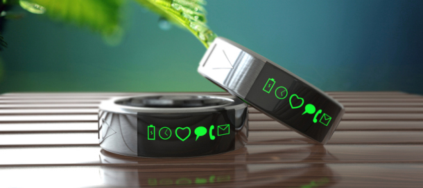
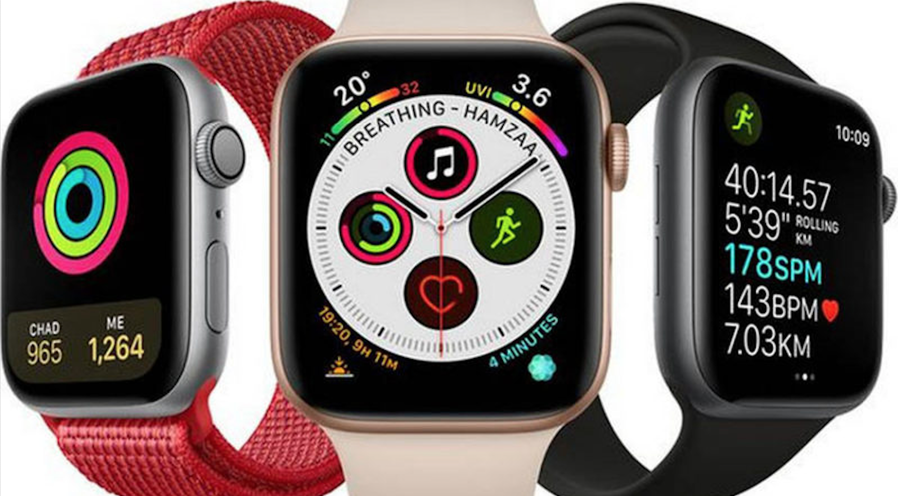
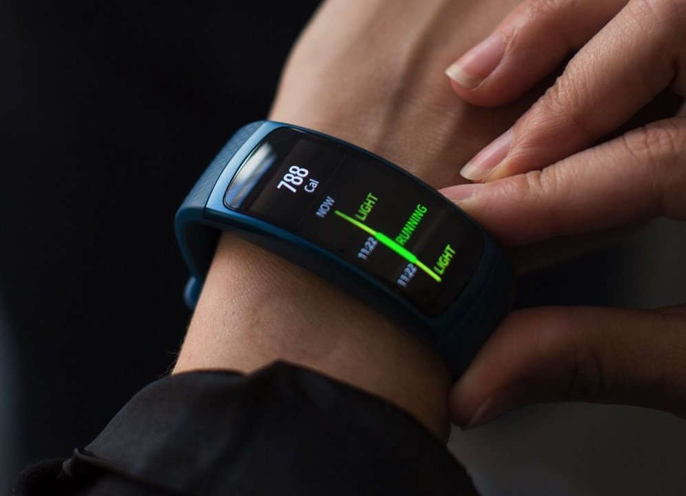
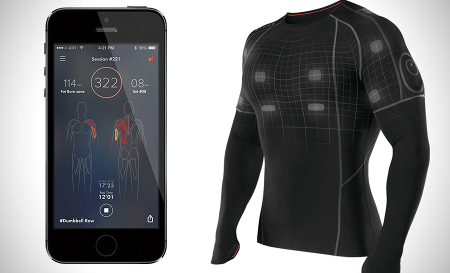

| Type | Description | image |
|---|---|---|
| Smart Jewellery | Smart jewelry is the logical conclusion of ongoing research into how to include health-tracking capabilities in smaller wearables. The most prominent kind of smart jewelry (as of 2020) might be the smart ring. Exemplified by brands such are Oura, smart rings are worn on the finger like standard rings, all the while obtaining health-tracking data that the user can later review on a smartphone. Many other unique iterations of smart jewelry exist, from bangles to bracelets, with some designs even created by well-known fashion firms. In the near future, the Joule will expand the range of potential smart jewelry; a smart health-tracking device that doubles as an earring backing, Joule effectively allows any earring to become a smart device. |  |
| Smartwatches | Smartwatches are likely the most commonly-known and most commonly-used wearables in the workplace today. Connecting a smartwatch to a smartphone enables the wearer to read and send new messages from their watch, eliminating the need to hold and view one’s phone. Smartwatch designers are finding new ways to innovate: starting from its Series 4 product line, Apple’s Apple Watch enables users to obtain an electrocardiogram heart reading without any additional accessories, while the Matrix PowerWatch Series 2 can charge from solar power and body heat in place of electricity. |  |
| Fitness Trackers | The modern successor to pedometers, fitness trackers monitor steps taken, heart rate, calories burned, and a range of other fitness metrics. The distinction between fitness tracking devices and smartwatches has become very small; fitness-oriented products (such as FitBit’s line of fitness trackers) now include smartwatch features like phone notification alerts, and smartwatches include an array of fitness tracking options and capabilities. Fitness trackers tend to be cheaper, however, as they have comparatively fewer features, and focus on functionality, rather than aesthetic appeal. |  |
| Smart Clothing | By making contact with a larger amount of one’s body, smart clothing can provide deeper insights than smaller wearables can, enabling advanced tracking for both medical care and lifestyle improvement. Samsung conducts extensive research in this sector, and has filed a number of promising patents; if these patents become commercially-available products, Samsung may soon release smart shirts capable of diagnosing respiratory diseases and smart shoes that monitor running form. Consumers can already purchase Siren Socks (smart socks that can detect developing foot ulcers), Nadi X smart pants by Wearable X (yoga pants that vibrate to improve form during yoga exercises), and Naviano smart swimsuits that provide alerts when the user should apply sunscreen, among many other kinds of smart clothing. |  |
A wearable computer also known as a wearable or body-borne computer,[1][2] is a computing device worn on the body
The definition of 'wearable computer' may be narrow or broad, extending to smartphones or even ordinary wristwatches.[
Wearables may be for general use, in which case they are just a particularly small example of mobile computing. Alternatively they may be for specialized purposes such as fitness trackers. They may incorporate special sensors such as accelerometers, thermometer and heart rate monitors, or novel user interfaces such as Google Glass, an optical head-mounted display controlled by gestures. It may be that specialized wearables will evolve into general all-in-one devices, as happened with the convergence of PDAs and mobile phones into smartphones.
Wearables are typically worn on the wrist (e.g. fitness trackers), hung from the neck (like a necklace), strapped to the arm or leg (smartphones when exercising), or on the head (as glasses or a helmet), though some have been located elsewhere (e.g. on a finger or in a shoe). Devices carried in a pocket or bag – such as smartphones and before them pocket calculators and PDAs, may or may not be regarded as 'worn'.
Wearable computing is the subject of active research, especially the form-factor and location on the body, with areas of study including user interface design, augmented reality, and pattern recognition. The use of wearables for specific applications, for compensating disabilities or supporting elderly people steadily increases.s